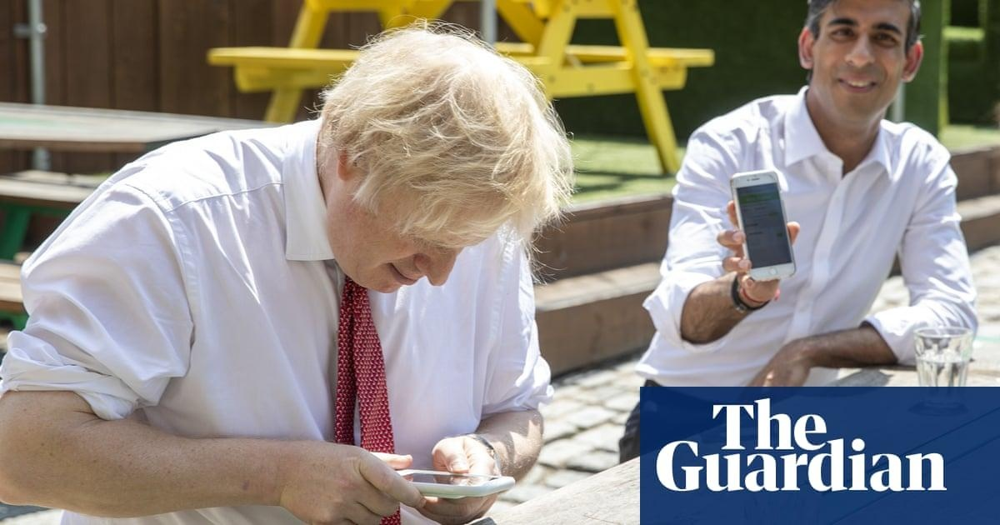

Covid inquiry heads for row with government over Google Spaces redactionsA fresh battle over unredacted Covid documents is looming, as the public inquiry’s most senior lawyer voiced fears about a tussle with the government over messages sent on the Google Spaces platform. Hugo Keith KC said the “same issue” threatened to arise as with WhatsApps, which the Cabinet Office is refusing to hand over in full. The revelation that another major source of files could be censored by the government may fuel further accusations of a cover-up. Whitehall bosses were given short shrift by Keith, who spoke at the first public hearing of the Covid inquiry since it was announced last week a judicial review was being launched in a bid to limit its powers. Signed off by Rishi Sunak, the move will try to push back against the inquiry’s demands to be given unredacted files and messages. Instead, the Cabinet Office wants to decide for itself what material is relevant, and hold back any “unambiguously irrelevant” material from the inquiry. In January, the Cabinet Office said that Google Spaces, a group messaging platform, had been used during the pandemic by government figures to discuss Covid policy, according to Keith. The inquiry asked for a full list of potentially relevant groups, their members, the number of messages and how long each Space was active for, said Keith. But it took until the end of May for the Cabinet Office to do so – something he described as “regrettable”. Work is only just beginning to extract the messages, Keith said, adding: “We maintain that that material … must be provided to the inquiry without redactions.” Any redactions made by the government to messages on Google Spaces or WhatsApps would be “wrong in principle” and slow down the inquiry, Keith said. Inquiry officials will begin combing through Boris Johnson’s unredacted WhatsApps later this week, Keith said. The former prime minister handed over messages dating from May 2021 onwards directly to the inquiry, circumventing the Cabinet Office. Messages from earlier in the pandemic, which are on a phone Johnson has said he was told never to turn on again after a security breach, are still hoped to be retrieved. Keith said he had told the Cabinet Office to collect the old phone and download the information on it safely, to then pass on to the inquiry. He added Johnson’s notebooks were held by the government, and the inquiry had asked for these to be returned to him so he could provide the document directly to them. In an attempt to hold the government’s feet to the fire, the inquiry chair, Heather Hallett, said the Cabinet Office had until the end of the week to say whether it would pass on in unredacted form all the documents Johnson has indicated he is happy being shared. There was bemusement when the government’s lawyer, Nicholas Chapman, said: “The position is, the Cabinet Office is working out its position.” It also emerged on Tuesday that government departments appear to be taking a different approach to redactions. The Foreign Office has redacted some WhatsApp messages from two special advisers, but Keith contrasted that with the Department of Health and Social Care, saying it had been “much fuller” in its disclosure. The legal showdown between the government and the Covid inquiry is likely to take place in around a month’s time. The high court has agreed to speed up the process by combining the permission and application hearing into one, said Keith. He said it should take place “on 30 June or very shortly thereafter”. No 10 said on Tuesday that it still wanted to reach a negotiated settlement with the Covid inquiry, to avoid the judicial review hearing needing to go ahead. The government argues it should not have to hand over irrelevant messages to the inquiry, such as personal discussion of a child’s health. Meanwhile, ministers have been warned they could face criminal sanctions if found to be using disappearing messages on WhatsApp chats that include government business. John Edwards, the information commissioner, told MPs there was an “ongoing duty” for ministers to consciously assess the contents of their message – including voice notes. Asked what the sanction should be if ministers were found to have disappearing messages enabled on devices where government business was being discussed, he replied: “It’s a little perilous for me to speculate I think on hypotheticals but there are criminal sanctions for failing to maintain a record or destroying a record.” |
 |